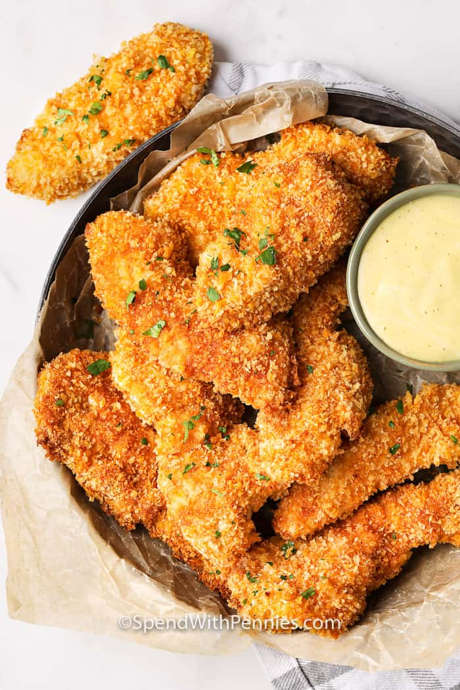

Crispy Chicken Tenders Recipe

Description
This recipe creates restaraunt quality crispy chicken tenders.
It is up to you to decide what spices to use, as this dish is highly customizable.
One chicken breast creates about 8 tenders depending on the size that you cut them, making
this a great meal to feed your family.
Ingredients
- Chicken breast
- Flour
- Egg
- Panko bread crumbs
- Canola oil cooking spray
- Spices (optional)
Steps
- Preheat oven to 400 degrees
- Cut chicken into strips
- Crack egg into a bowl, place flour and breadcrumbs
on their own respective plates. Place spices with breadcrumbs if you desire.
- Dip each chicken strip into the flour, then egg, then bread crumbs, making sure to
remove excess egg and flour, and pressing in the breadcrumbs so they properly
adhere to the chicken.
- Spray cooking sheet with canola oil cooking spray.
- Place the tenders on the cooking sheet.
- Give a light spray of the canola oil over the tenders.
- Bake in the oven for 15 minutes.
- Enjoy!
Return Home